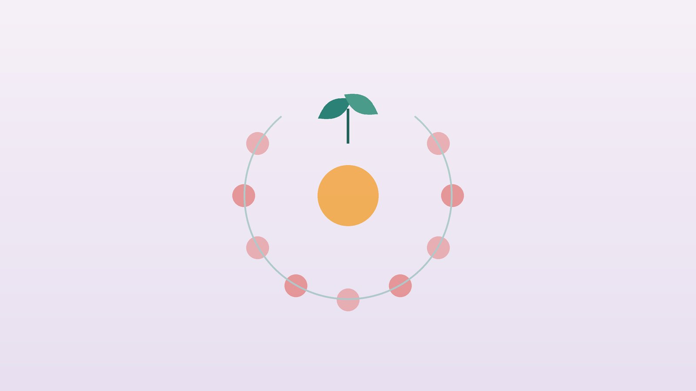

건강 칼럼 · 인천 무월경 한의원
몇 달째 생리가 없다면, 무월경 원인 확인과 한방 치료

무월경, 이런 상황인가요?
- 생리가 3개월 넘게 없다 (원래 불규칙했다면 6개월)
- 최근 몇 달 사이 체중이 크게 줄었다
- 운동량을 크게 늘렸거나 식사량을 크게 줄였다
- 큰 스트레스나 생활 변화가 있었다
- 유즙이 나오거나 두통, 시야 이상이 있다
- 만 15세가 되었는데 초경이 없다
이 체크리스트는 진단 도구가 아니라 상담이 필요한지 가늠해 보는 참고용입니다.
무월경이란 무엇인가요?
미국생식의학회(ASRM)는 원래 생리가 규칙적이던 사람이 3개월 이상, 불규칙하던 사람이 6개월 이상 생리를 하지 않으면 이차성 무월경으로 보고 원인을 평가하도록 권합니다. 만 15세가 되도록 초경이 없다면 원발성 무월경으로 따로 검사가 필요합니다.
무월경이 오래가면 여성호르몬이 부족해져 뼈가 약해질 수 있어, '생리가 없어 편하다'고 넘기지 말고 원인을 찾는 것이 중요합니다.
무월경의 흔한 원인과 검사
- 임신: 가장 먼저 확인해야 할 원인입니다.
- 시상하부성 무월경: 급격한 다이어트, 과도한 운동, 큰 스트레스로 뇌가 생리 신호를 줄인 상태입니다.
- 다낭성난소증후군: 배란이 잘 일어나지 않아 생리가 길게 건너뜁니다.
- 호르몬 이상: 갑상선 질환이나 유즙분비호르몬(프로락틴)이 높은 경우입니다.
- 조기 난소 기능 저하: 40세 이전에 난소 기능이 떨어지는 경우입니다.
산부인과에서 임신 검사와 함께 갑상선, 프로락틴, 난포자극호르몬 등의 혈액검사를 먼저 받으시길 권합니다.
한의학의 경폐(經閉)
옛 의서는 여성의 몸에서 생리를 조절하는 통로로 충맥(衝脈)과 임맥(任脈)을 꼽았고, 이 두 맥이 충실해야 월경(月經)이 때맞춰 온다고 했습니다. 그리고 생리혈은 음식에서 얻은 영양이 혈로 바뀌어 충맥에 가득 찼을 때 넘쳐 나오는 것으로 이해했습니다.
한의학에서는 무월경을 경폐(經閉)라 부르며, 크게 두 갈래로 보았습니다. 하나는 그릇이 비어 넘칠 것이 없는 혈고(血枯), 즉 다이어트와 과로로 혈이 바닥난 상태이고, 다른 하나는 그릇은 찼는데 길이 막힌 혈체(血滯), 즉 스트레스와 찬 기운, 담음으로 흐름이 막힌 상태입니다. 비어 있는 경우에 억지로 뚫으면 더 지치기 때문에, 이 구분이 치료의 첫걸음입니다.
나는 어떤 유형의 무월경일까?
1. 기혈양허(氣血兩虛) 비어서 멈춘 유형
- 이런 분에게 많아요
- 다이어트나 과로로 체중과 체력이 크게 떨어진 분
- 나타나는 모습
- 생리가 점점 줄다가 멈췄고 기운이 없다
- 함께 오는 몸의 신호
- 어지러움, 얼굴이 창백함, 손발 저림, 탈모
- 진찰에서 보이는 모습
- 혀가 창백하고 맥이 가늘고 약함
- 치료 방향
- 기혈을 채워 생리를 만들 바탕을 회복하는 방향 (팔진탕·인삼양영탕 계열)
- 오늘부터 해 볼 것
- 식사량과 단백질을 늘리고 운동을 줄이세요.
2. 신허(腎虛) 뿌리가 약해진 유형
- 이런 분에게 많아요
- 초경이 늦었거나 몸이 차고 허리가 시린 분
- 나타나는 모습
- 생리가 오래 없고 아랫배와 허리가 차다
- 함께 오는 몸의 신호
- 허리·무릎 시큰함, 잦은 소변, 추위를 탐
- 진찰에서 보이는 모습
- 맥이 깊고 약함
- 치료 방향
- 생식 기능의 바탕을 데우고 보충하는 방향 (우귀음 계열)
- 오늘부터 해 볼 것
- 아랫배와 허리를 따뜻하게 하고 일찍 주무세요.
3. 기체혈어(氣滯血瘀) 막혀서 멈춘 유형
- 이런 분에게 많아요
- 큰 스트레스나 충격 뒤에 멈춘 분
- 나타나는 모습
- 아랫배가 팽팽하고 가슴이 답답하다
- 함께 오는 몸의 신호
- 예민함, 한숨, 아랫배 압통
- 진찰에서 보이는 모습
- 혀에 어두운 반점, 맥이 팽팽함
- 치료 방향
- 막힌 기운과 혈을 풀어 주는 방향 (혈부축어탕 계열)
- 오늘부터 해 볼 것
- 가벼운 운동과 대화로 쌓인 긴장을 풀어 주세요.
한의원에서는 어떻게 진찰하나요?
- 검사 결과 확인: 임신 검사와 호르몬 검사 결과를 먼저 확인합니다.
- 생활 문진: 최근 체중 변화, 식사량, 운동량, 수면, 스트레스를 자세히 여쭙니다.
- 몸 상태: 손발과 아랫배 온도, 머리카락과 피부 상태를 봅니다.
- 설진·맥진: 비어 있는 상태인지 막힌 상태인지 판단합니다.
침·약침·한약 치료는 어떻게 하나요?
1. 침 치료
- 관원(關元)·중극(中極): 배꼽 아래 아랫배 가운데.
- 신수(腎俞): 허리 양옆.
- 차료(次髎): 엉치뼈 위쪽 두 번째 구멍 자리.
- 삼음교(三陰交): 안쪽 복사뼈 위.
2. 약침
허리와 엉치, 아랫배의 관련 경혈에 약침을 적용해 골반 주변이 차고 굳어 있는 상태를 풀어 줍니다.
3. 한약
비어 있는 경우에는 채우는 처방을, 막힌 경우에는 흐름을 여는 처방을 씁니다. 호르몬 치료 중이라면 일정을 공유해 주세요.
원장님이 네이버 블로그에 진료 이야기와 건강 정보를 꾸준히 올리고 있습니다. 더 많은 이야기는 블로그에서 확인해 보세요.
블로그 보기다이어트 후 생리가 멈췄다면
짧은 기간에 체중을 많이 줄였거나 운동량을 크게 늘린 뒤 생리가 멈췄다면, 몸이 에너지 부족을 위기로 받아들인 경우가 많습니다. 이때는 생리를 억지로 나오게 하는 것보다 충분한 식사와 휴식으로 몸에 여유를 돌려주는 것이 먼저입니다. 식사량과 운동량, 체중 변화를 함께 기록해 오시면 회복 계획을 세우는 데 도움이 됩니다.
치료는 어떤 순서로 진행되나요?
- 첫 진료 검사 결과를 확인하고 비어 있는 유형인지 막힌 유형인지 정합니다.
- 1~3개월 주 1회 안팎의 침 치료와 한약으로 체력과 영양, 수면을 회복시킵니다.
- 3개월 단위 생리 징후(가슴 팽팽함, 냉 변화)와 생리 회복 여부를 확인합니다.
- 회복 후 주기가 돌아오면 생리불순 관리로 이어갑니다.
원인과 기간에 따라 다르며 몇 달이 걸리기도 합니다.
생리 회복을 돕는 생활 관리
- 식사: 끼니를 거르지 말고 단백질과 건강한 지방을 충분히 먹습니다.
- 운동: 숨이 약간 찰 정도로 줄이고 휴식일을 둡니다.
- 수면: 하루 7시간 이상, 밤 12시 이전에 잠듭니다.
- 뼈 건강: 칼슘과 비타민D 섭취, 햇볕 쬐기로 뼈를 챙깁니다.
- 보온: 아랫배와 허리를 따뜻하게 합니다.
다른 진료가 먼저인 경우
- 임신 가능성이 있다면 임신 검사를 먼저 하세요.
- 유즙 분비, 두통, 시야 이상이 있다면 뇌하수체 검사가 필요합니다.
- 40세 이전에 생리가 멈추고 열감이 있다면 조기 난소 기능 저하를 확인하세요.
- 식사를 극도로 제한하고 체중이 계속 줄고 있다면 섭식장애 진료를 함께 받으세요.
자주 묻는 질문 Q&A
- Q1. 생리가 3개월 없는데 그냥 기다려도 될까요?
- 임신이 아니더라도 원인을 확인해야 합니다. 산부인과 검사를 먼저 받고 한방 치료를 계획하세요.
- Q2. 호르몬 주사로 생리를 하게 하면 해결되나요?
- 일시적으로 유도할 수 있지만 원인이 그대로라면 다시 멈출 수 있습니다.
- Q3. 무월경이 오래되면 어떤 문제가 생기나요?
- 여성호르몬이 부족한 상태가 길어지면 골밀도가 떨어질 수 있습니다.
- Q4. 치료하면 언제쯤 생리가 돌아오나요?
- 원인과 기간에 따라 다르며 몇 달이 걸리기도 합니다.
- Q5. 운동선수인데 운동을 줄여야 하나요?
- 운동량에 비해 먹는 양이 부족한 경우가 많아 식사량을 늘리는 것이 우선입니다.
- Q6. 체중이 얼마나 회복되면 생리가 돌아오나요?
- 사람마다 다르며, 체중과 함께 식사의 질과 스트레스 회복이 중요합니다.
- Q7. 무월경이면 임신이 안 되나요?
- 배란이 없으면 임신이 어렵지만, 원인을 치료하면 회복되는 경우가 많습니다.
- Q8. 다낭성난소증후군 때문일 수도 있나요?
- 흔한 원인 중 하나라 검사로 확인합니다.
문원열 대표원장한의사 · 365스마일한의원
인천 서구 가정동 한자리에서 10년 넘게 진료하며, 환자 한 분 한 분의 아픔을 깊이 들여다보고 근본적인 원인을 찾는 진료를 지향합니다.
원장 소개 보기 →진료 안내
- 진료시간
- 평일 09:00~20:00 (점심시간 13:00~14:00)
토·일·공휴일 09:00~15:00 - 주소
- 인천광역시 서구 가경주로 46, 2층 (가정동)
인천2호선 가정중앙시장역 인근
영상으로 길 안내 보기 → - 주차
- 한의원 건물 바로 앞 1층 도원주차장
진료시간은 사정에 따라 바뀔 수 있으니 방문 전 전화로 확인해 주세요.
함께 읽으면 좋은 칼럼
건강 칼럼 전체 보기 →

참고 자료
- American Society for Reproductive Medicine (ASRM) Practice Committee, Current evaluation of amenorrhea — 원문
- 질병관리청 국가건강정보포털 — 원문
※ 이 글은 일반적인 건강 정보이며, 개인의 상태에 따라 치료 방법과 결과는 다를 수 있습니다. 정확한 진단과 치료는 진료를 통해 결정됩니다. 침·약침 시술 후 드물게 멍, 통증 등이 생길 수 있습니다.